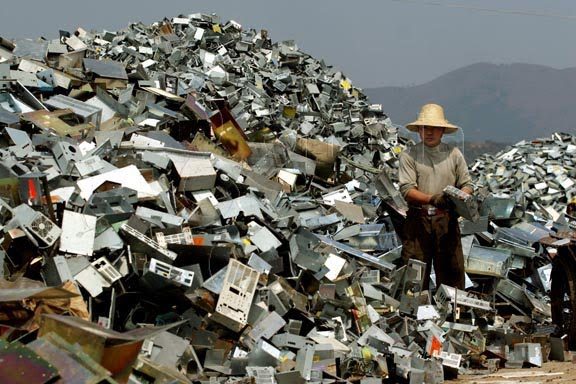
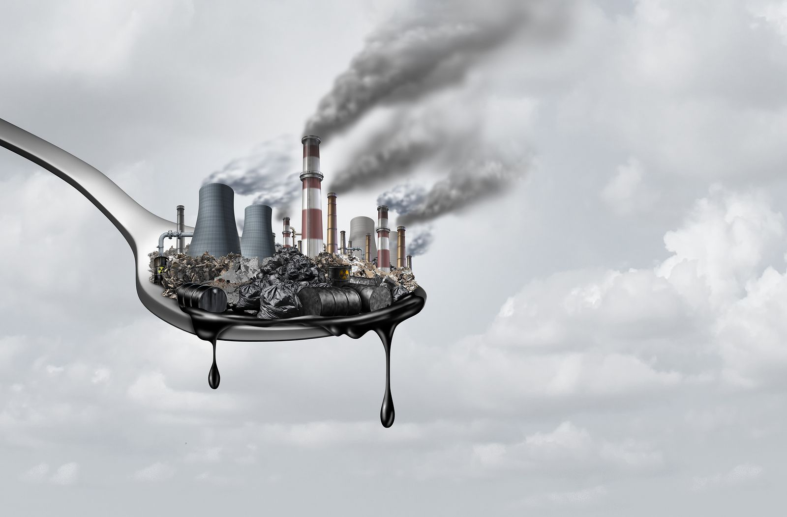
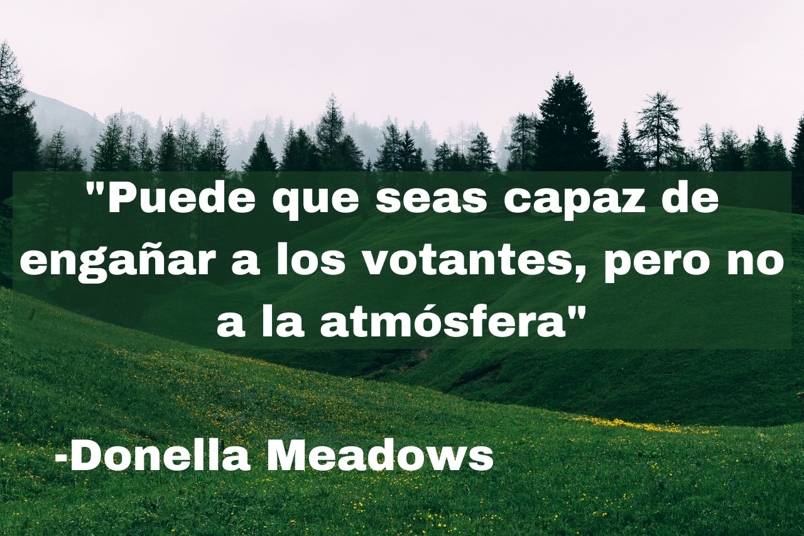
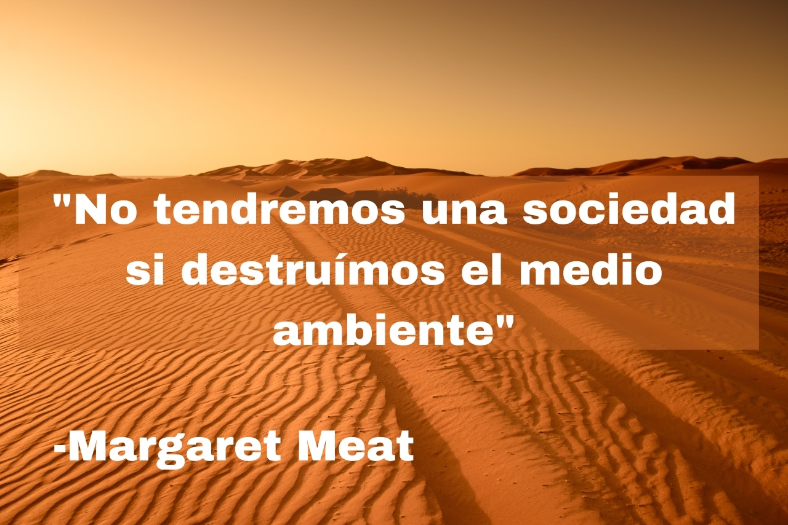
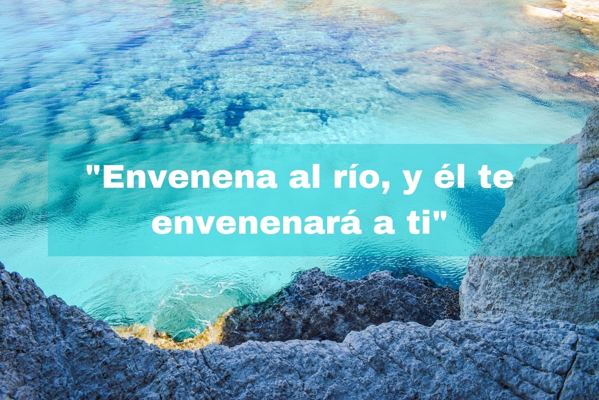

EL IMPACTO TECNOLOGÍCO AMBIENTAL
El medio ambiente es fundamental para mejorar nuestra calidad de vida.
CONSECUENCIAS DE LA BASURA TECNOLÓGICA
CONSECUENCIAS DE LA BASURA TECNOLÓGICA
IMPACTO AMBIENTAL
 Toda actividad tecnológica produce, en mayor o menor medida, una alteración del medio ambiente. Pero... ¿Qué es el impacto ambiental?.El impacto ambiental, impacto antrópico o impacto antropogénico abarca los distintos efectos que la actividad humana y el modelo de vida humano desatan sobre el medio ambiente natural.
Estas alteraciones son tan significativas y ejercen un efecto tan duradero sobre los ecosistemas del mundo, que muchos estudiosos sugieren el uso del término antropoceno (esto es, vinculado con el ser humano) para el período geológico actual, cuyas características no podrían comprenderse sin el impacto ambiental de nuestras industrias.
El impacto ambiental puede tener muchas formas y también efectos diferentes sobre el medio ambiente. En líneas generales se puede definir como la transformación del entorno terrestre, marítimo e incluso atmosférico como consecuencia de distintas actividades humanas.
Sus formas pueden ir desde la deforestación y la destrucción de los suelos debido a la minería, hasta los derrames petroleros marítimos y la contaminación química de la atmósfera.
El gran problema de este fenómeno es el costo que tiene para las demás formas de vida, ya que al destruir sus hábitats naturales muchas especies perecen y se extinguen. Así se empobrece la biodiversidad planetaria, que es uno de sus grandes e inigualables tesoros.
Además, las consecuencias futuras para la sustentabilidad de la vida tal y como la conocemos en el mundo son impredecibles. Por eso, las acciones tomadas hoy podrían resultar mucho más costosas para la especie toda de lo que hoy siquiera sospechamos.
"Se conoce como impacto ambiental al efecto que produce la actividad humana sobre el medio ambiente."
"Es inevitable que el modo de vida de la humanidad tenga algún tipo de impacto ambiental. Como especie aprendimos hace miles de años que podíamos hacernos la vida más cómoda, larga y plena adaptando el medio ambiente a nuestras necesidades y transformando distintos materiales, en lugar de adaptarnos nosotros a través del lentísimo proceso evolutivo, como el resto de las especies.
Sin embargo, no todas las actividades humanas tienen el mismo impacto ambiental. Muchas de ellas son casi inocuas, o tienen un impacto tan moderado que la naturaleza puede contrarrestarlo en un corto margen de tiempo. Pero hay otras que impactan enormemente el ecosistema, de manera permanente o casi permanente, sin darle tiempo a la naturaleza de corregir el daño hecho.

El modelo económico y de producción que impera en el mundo desde la Revolución Industrial se basa en la obtención masiva de materias primas y su transformación mediante diferentes procesos. Muchos de ellos generan desechos peligrosos, o subproducen elementos que, al no tener uso alguno para la civilización, son devueltos a la naturaleza en proporciones imposibles de asimilar rápidamente.
  